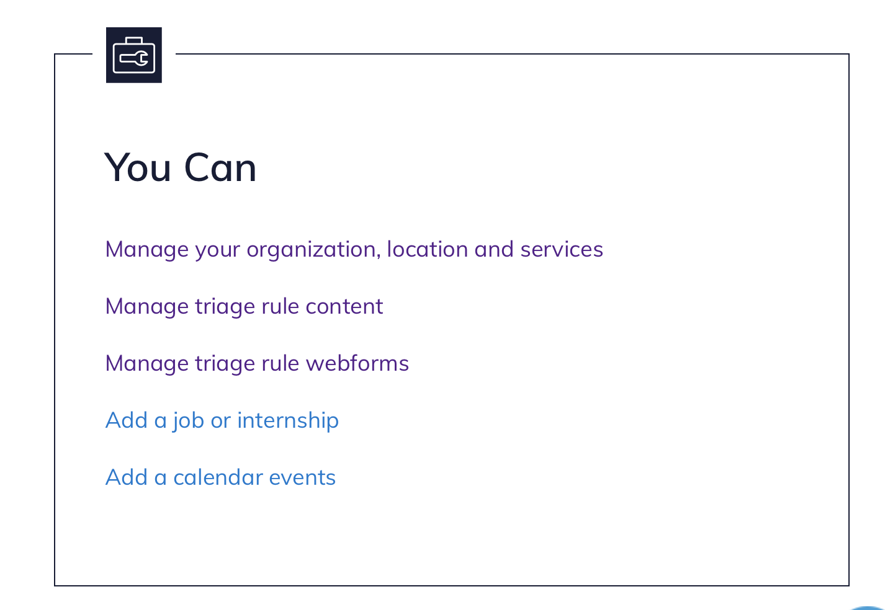
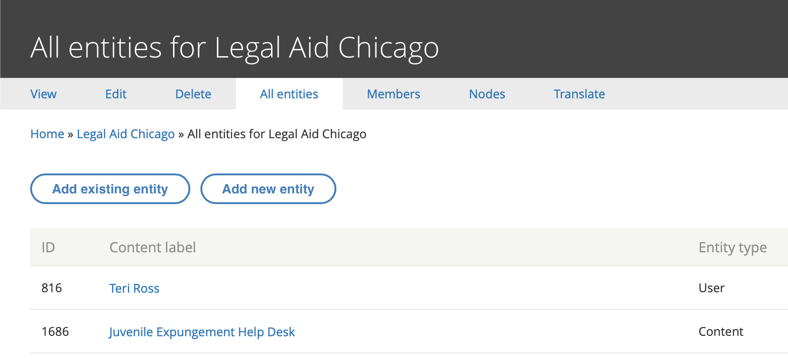
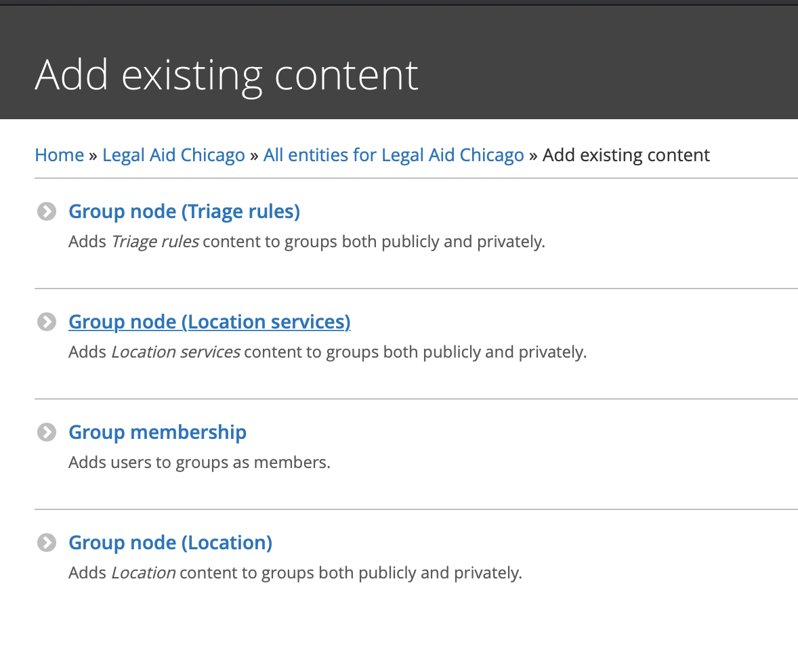
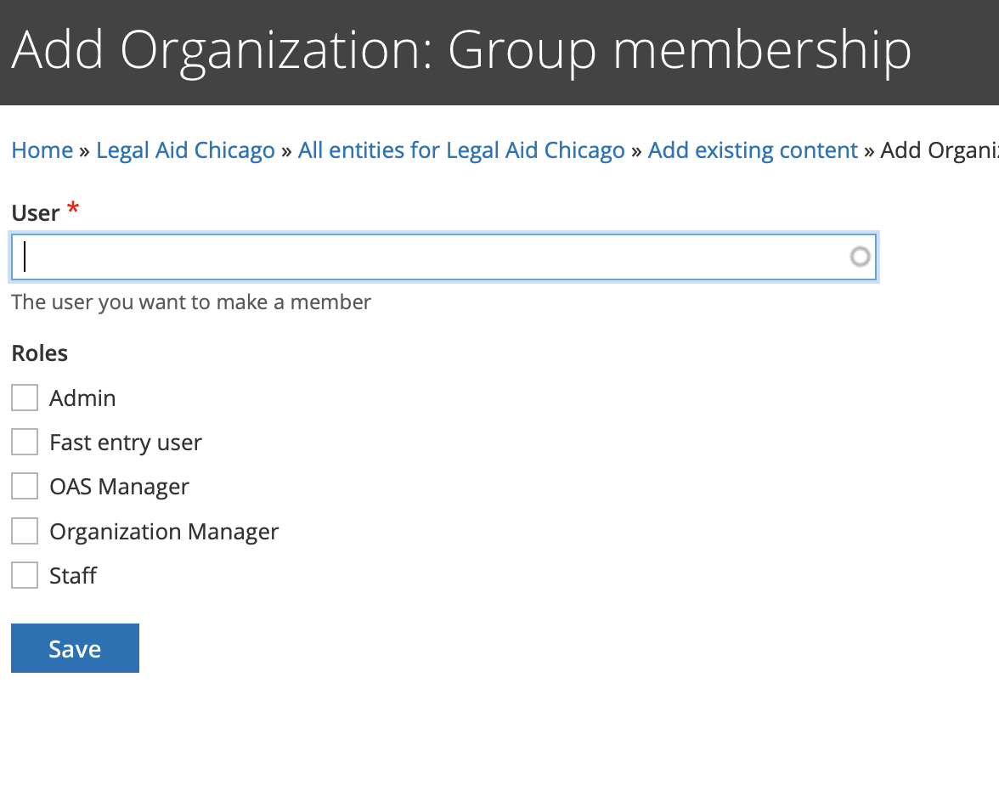
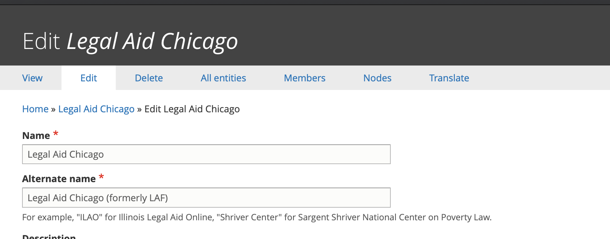
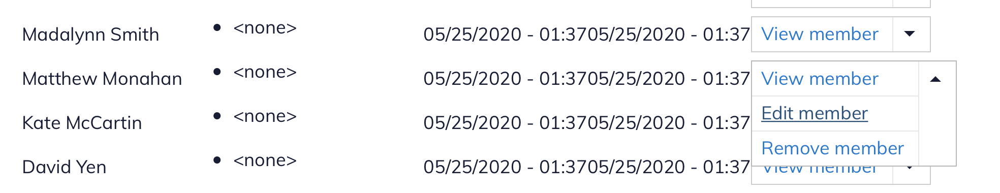
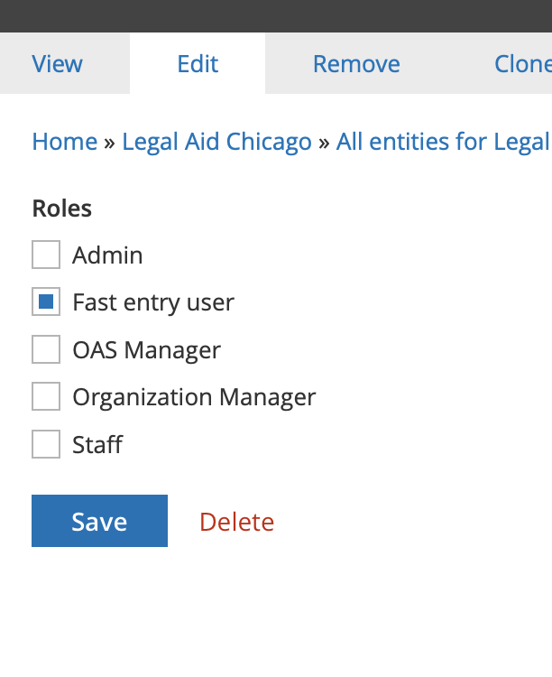
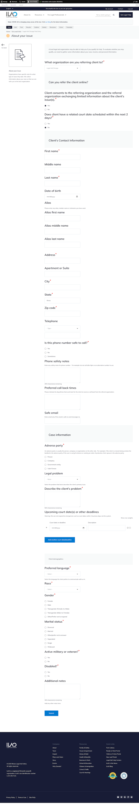
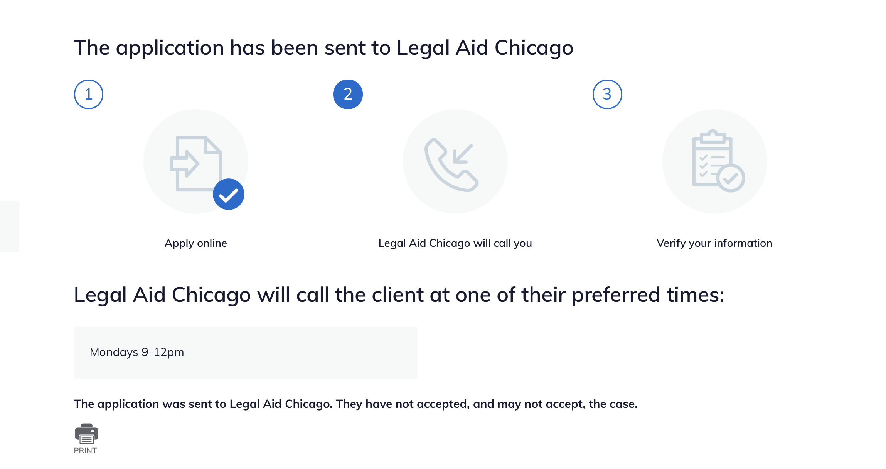

Fast Entry Form¶
The fast entry form can be used to quickly refer users to OTIS partners, bypassing all triage rules and the standard online intake forms.
Fast entry permissions¶
The global fast entry form is accessible at /get-legal-help/fast-entry but is only accessible to:
ILAO staff
The referral fast entry form is accessible at /get-legal-help/[organization]/fast-entry* but is only accessible to:
ILAO staff
Logged in website users who have been given the fast entry member role within the organization settings for the OTIS partner organization by an organization manager of the OTIS partner organization
[organization] is replaced with the organization’s specific name or acronym. Ex. Prairie State Legal Services, Inc. = /prairie-state
Note
OAS/OTIS managers should be given the Fast Entry role to be able to see the form.
Adding a fast entry user¶
An OTIS manager or organization manager will need to:
Invite the fast entry user to register on IllinoisLegalAid.org if the user is not already registered;
Once the user has registered, add the user to their organization (group membership); and
Give the user the fast entry user role in their organization:
Click on Manage your organization, locations, and services from your dashboard
Go to All entities and select Add existing entity
and then click Group Membership
use the autocomplete to look up the user and give them the Fast entry user role by checking the box and clicking save:
To Remove the permission:¶
Go to Members
Select edit member next to the person you want to add (or remove) the fast entry role from:
Uncheck Fast entry user and save
Fast entry form¶
Confirmation¶
Fast entry forms will be treated as “we call client” and a field for callback times is collected via a preferred day/time field.
Data capture & reporting¶
On submission, the form will create an etransfer into legal server. Because there is no triage the data will be slightly different than triage intake:
Oas Triage User Data Fields¶
user_id should be the user ID of the person submitting the form
created should be the time stamp the form is submitted
changed should be the time stamp the form is submitted
intake_created should be the time stamp the form is submitted
intake_changed should be the time stamp the form is submitted
zip_code should be the zip code entered in the address fields
last_screen_viewed should be fast-entry
county should be derived from zip_code
state should be pulled from address fields
triage_status should be Intake Available
intake_status should be eTransferred
intake_organization should be pulled from the intake_settings stored in the legal server configuration for the selected organization.
lsc_code should be the name of the legal category term reference
referral_source should be “Fast Entry”
gender should be the gender name from the taxonomy
race should be race name from the taxonomy
marital_status should be should be the marital status name from the related taxonomy
primary_language should be the language name from the related taxonomy
etransfer_data should be the serialized etransfer packet
Other fields in ILAO’s database¶
If the user entered a mobile phone, it should be stored in oas_triage_user__oas_mobile_phone
Response to “Does client consent to receive confirmation and follow-up text messages from IllinoisLegalAid.org?* ” should be stored in oas_triage_user__oas_opt_in_sms
legal problem should be stored in oas_triage_user__oas_triage_search (check this)
current count SHOULD NOT BE changed in intake settings when the record is saved.
Etransferred elements only¶
These are sent to LegalServer only and not stored as fields in ILAO’s website (except as webform submissions):
Client first, middle, last name
Client date of birth
Client address, phone
Alias first, middle, last name
veteran (true or false)
disabled (true or false)
eTransferOrganization pulled from legal server configuration
externalID should be ILAOWeb-[triage user id]
email of user
related phone notes and telephone (except for mobile numbers)
Notes only elements¶
Add “Source: Fast-entry from [email address of logged in user]”
Does client consent to text messages from referral organization should be appended to notes as “Client consents to text messages: Yes” or Client consents to text messages: No”
Adverse party should be appended to notes as “Adverse party: [names]”
Describe the client’s problem as entered with a prefix of “Problem description: “
Upcoming dates/deadlines should be appended to notes formatted as “Upcoming court dates and deadlines: [date (description); date(description)]”
Additional notes as entered with a prefix of “Additional notes:”
Not stored elements¶
This data is not stored anywhere except in webform submissions
Yes/no for client consents
Yes/no for related court date
If either of these are no, there should be no data saved at all and no eTransfer created.